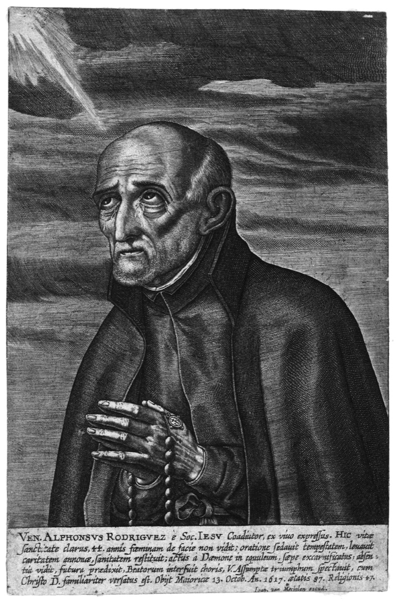

Misionari, pastiri i mistici (Pojedinačna proglašenja)
Brat
Sv. Alfonz Rodriguez
1533. – 1617.
Nakon obiteljskih gubitaka postao je isusovački brat i desetljećima služio kao vratar na Mallorci. Svakodnevne susrete pretvarao je u priliku za pomoć, savjet i molitvu, ohrabrivši i mladoga Petra Clavera.

Izvor slike
- Spomendan
- 31. listopada
- Zaštitništvo
- Majorka · Isusovačka braća
- Životni vijek
- 1533. – 1617.
- Djelovanje
- Duhovno vodstvo i razlučivanje · Svakodnevni rad i skrovita služba · Obitelj i gubitak bližnjih
- Razdoblje
- 16., 17. stoljeće
- Datum rođenja
- 25.07.1533.
- Mjesto rođenja
- Segovia, Španjolska
- Datum smrti
- 31.10.1617.
- Mjesto smrti/mučeništva
- Kolegij Montesión, Palma, Mallorca, Španjolska
- Okolnosti smrti/mučeništva
- Umro nakon bolesti u isusovačkom kolegiju.
- Uloga
- Brat
- Mučenik
- Ne
- Ostale oznake
- Vratar; udovac i otac prije ulaska u Družbu; duhovni pratitelj Petra Clavera
- Pripadnost
- Isusovac
- Drugi oblici imena
- Alfonz Rodríguez · Alphonsus Rodriguez · Alphonsus · Alfons Rodriguez · Alonso Rodríguez · Alfonso Rodriguez
Životopis
Alfonz Rodriguez nije bio svećenik ni poznat propovjednik. Bio je isusovački brat koji je gotovo čitav redovnički život proveo u kolegiju na Mallorci, gdje su mu ljudi dolazili po savjet i molitvu. Među njima je bio mladi Petar Klaver, kojega je ohrabrio na misijski put prema Americi.
Alfonz je rođen u Segoviji, u Španjolskoj, oko 1532. godine, u obitelji koja je trgovala vunom i tkaninama. U njihov je dom dolazio Petar Faber, jedan od prvih drugova svetoga Ignacija Loyolskoga. Prema isusovačkoj predaji, pomagao je dječaku u pripravi za prvu pričest. Alfonz je rano upoznao Družbu Isusovu i neko vrijeme pohađao njezin kolegij u Alcalá de Henaresu. Nakon očeve smrti morao je prekinuti školovanje i vratiti se obiteljskomu poslu. Umjesto puta prema učenoj službi, pred njim su bile brige trgovine i kućanstva.
Oženio se Maríjom Suárez i postao otac troje djece. Obiteljski je život, međutim, obilježio niz gubitaka: umrli su mu supruga i djeca, a posao je propadao. Izvori se razilaze u redoslijedu tih smrti, no slažu se da je Alfonz ostao udovac nakon velikih osobnih i gospodarskih nevolja. Nije ih mogao poništiti pobožnim riječima. Tražio je duhovni savjet kod isusovaca, molio i nastojao ponovno urediti život. Njegova kasnija blagost prema ljudima u žalosti nije bila naučena iz daljine; poznavao je nemoć čovjeka kojemu se u kratku vremenu uruši ono na čemu je gradio budućnost.
Želja da se pridruži isusovcima nije odmah naišla na otvorena vrata. Za svećenički studij nije imao potrebnu naobrazbu, zdravlje mu je bilo narušeno, a u tadašnjim se prilikama njegova dob smatrala visokom za početak redovničke formacije. Pokušao je nadoknaditi školovanje, no nije postigao što je želio. Naposljetku je 1571. primljen u Družbu Isusovu kao brat laik. To nije bila pripremna stepenica prema svećeništvu: isusovački je brat redovnik koji zavjetima i radom sudjeluje u istoj misiji Družbe, služeći na drukčiji način od svećenika. Alfonz je u tome pozivu našao mjesto kojemu će ostati vjeran do smrti.
Nakon nekoliko mjeseci poslan je u isusovački kolegij Montesión u Palmi na Mallorci. Ondje je, uz druge kućne poslove i službu u sakristiji, preuzeo vratarsku službu. Posjetitelju je trebalo naći profesora ili redovnika, učeniku prenijeti poziv, čovjeku u nevolji dati milostinju ili saslušati njegovu molbu. U kolegij su dolazili ljudi različitih staleža, od siromaha do gradskih dostojanstvenika. Takav je posao tražio razboritost i pouzdanost: Alfonz nije donosio velike odluke, ali je morao znati komu prenijeti vijesti, molbe i potrebe.
Alfonz je u svakom dolasku nastojao prepoznati Krista. Isusovački izvori prenose da je zvuk s vrata primao kao poziv Gospodina. Ta mu je misao pomagala da se usred prekida vraća svojemu zadatku bez ogorčenosti. Ljudi su zapazili njegovu strpljivost i počeli mu povjeravati svoje brige.
Redovnička svakodnevica uključivala je i sate molitve. Alfonz je njegovao osobnu pokoru, poslušnost i pobožnost prema Isusu i Blaženoj Djevici Mariji. Isusovački životopisi govore i o mističnim milostima, viđenjima i duhovnim kušnjama; subraća su njegove zapise čuvala kao svjedočanstvo o unutarnjem životu. Ni u starosti nije prestao obavljati redovite dužnosti dok mu je to snaga dopuštala.
Među mladim isusovcima koji su studirali na Mallorci bio je Petar Klaver. Razgovori sa starijim bratom pomogli su mu razabrati želju za misijama. Alfonz ga je poticao da ode u Ameriku, a Klaver je poslije u Cartageni posvetio život služenju Afrikancima dopremljenima u ropstvo.
Na poticaj poglavara Alfonz je bilježio svoja duhovna iskustva i pouke. Nastajale su uspomene, zabilješke o molitvi, odlukama i nutarnjim borbama, a ponešto je i prepisivao iz autora koji su mu bili važni. Ti su tekstovi poslije sabrani i objavljeni. O vlastitim mističnim iskustvima govorio je po poslušnosti. Njegovo je duhovno vodstvo najčešće imalo oblik jednostavna razgovora s onima koji su mu dolazili.
U Palmi je proveo gotovo čitav redovnički život. Starost mu je postupno oduzimala snagu, a prema predaji i pamćenje za molitve koje je dugo volio. Umro je 31. listopada 1617. Građani Mallorce i isusovačka zajednica već su za života cijenili njegovu dobrotu; poslije smrti štovanje se širilo. Papa Leon XII. proglasio ga je blaženim 1825., a Leon XIII. svetim 15. siječnja 1888. Danas ga Družba Isusova osobito časti kao zaštitnika svoje braće. Njegov se spomendan slavi 31. listopada.
Kao udovac i otac koji je postao redovnički brat, sveti Alfonz ostavio je primjer strpljive vjernosti Bogu i ljudima u svakodnevnoj službi.
Pročitaj više na izvornoj stranici ↗